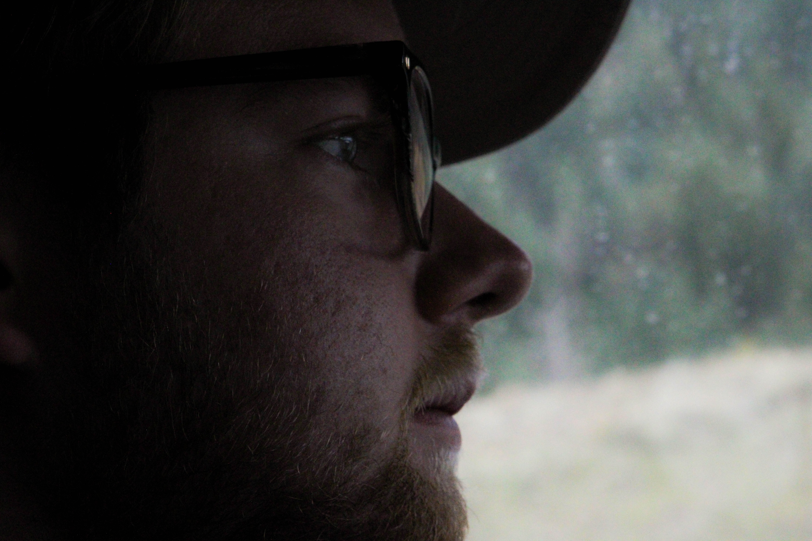
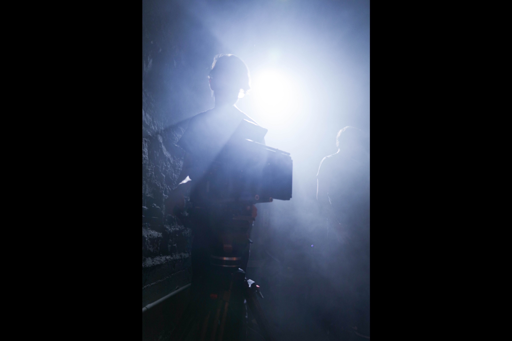

1 / 19

A friend lent me a lens for the weekend, and I couldn't wait to try it out! I took this on the drive up through the mountains. It was a beautiful cloudy day, and it gave this picture a cinematic feel, especially with the close angle.
2 / 19
We went to this little dining hall in the mountains and there was a super fun mixture of industrial building and rustic-esque decoration. I snapped a few shots and they came out pretty cool!
3 / 19

My wonderful friend Elisabeth Larson indulged me and posed for a few pictures through the fire.
4 / 19

Here she is again.
5 / 19

Wine has beautiful colors in it, and the fire helped me bring it out!
6 / 19

A game of pool creates a series of very interesting angles in the human body.
7 / 19

Here are some more examples. It makes my friend Misha Kuetemeier look very serious.
8 / 19
It can also make you look more mysterious, which is what I was going for with this image of Aidan Coohill.
9 / 19
I took my first step into this little record store and knew I needed to photograph it. The posters on the ceiling made it feel very cozy. Just gorgeous.
10 / 19

Sunsets are cliche, but cliches happen for a reason I suppose. At the end of the day, it's hard to resist a photo of the sky.
11 / 19

The intersection between the earth and the sky is beautiful at any time of day, though.
12 / 19

This was taken on a film shoot where I was providing the role of behind the scenes photographer.
13 / 19
Here's one of our crew members, on the job.
14 / 19
I caught him off guard for this photo.
15 / 19
Myles, our cinematographer, taking a break on set.
16 / 19
This is a series of images of one of our actors, Eli, in costume.
17 / 19

18 / 19
19 / 19